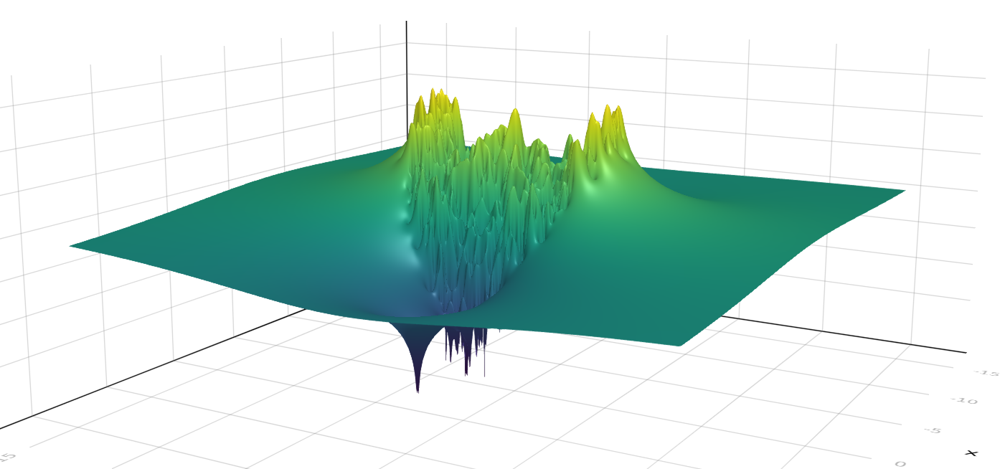
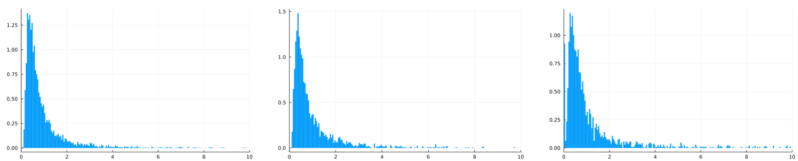

Le polynôme caractéristique des matrices en grande dimension
Exposé à l’IMJ, le 8 février 2023
Matrices gaussiennes denses
A_n : coefficients \mathscr{N}_{\mathbb{R}}(0,1) indépendants.

Matrices binaires
A_n : coefficients \mathrm{Bernoulli}(d/n) indépendants.

Sommes de permutations uniformes
A_n =\pi_1 + \dotsc + \pi_d, somme de d matrices de permutation sur [n].

Sommes de permutations de Ewens
A = \pi_1 + ... + \pi_d où \pi_i suivent la loi \mathrm{ewens}(\theta) :
\mathbf{P}(\pi = \sigma) = \frac{\theta^{\mathrm{cycles(\sigma)}}}{\theta(\theta+1)\dotsb(\theta + n)}

F(z) = \exp \left( -\sum_{k=1}^\infty X_k \frac{z^k}{k} \right) = \prod_{k=1}^\infty (1 - z^k)^{Y_k}

Fluctuations autour de OKMC
\Phi_n(z) = \log | \det (z - A) | - n U_d(z)
 
Non-orthogonalité
couleur du spectre : \mathscr{O}_i = |u_i|^2 |v_i|^2

